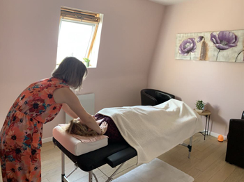
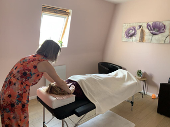

Le Reiki Usui
"Les maux du corps sont les mots de l'âme, ainsi on ne doit pas chercher à guérir le corps sans chercher à guérir l'âme." Platon
Dans quel cas le Reiki peut-il vous être utile ? (liste non exhaustive)
Avec le reiki Usui, je peux vous accompagner :
- - afin que vous puissiez réduire votre stress ou votre anxiété
- - afin d'améliorer la qualité de votre sommeil
- - afin de retrouver un équilibre émotionnel et mental
- - afin d'améliorer votre bien-être général
Tarifs : 45€ la séance *
Durée : une séance dure 1h environ
Paiement : Espèce, virement ou chèque
* Certaines mutuelles peuvent rembourser des séances de reiki, n'hésitez pas à vous rapprocher de la vôtre.
Prendre rendez-vous 

Comment je pratique le Reiki Usui ?
Mes séances de reiki Usui se déroulent toutes de la même façon :
- - un temps d'échange où vous allez m'informer de vos attentes, de vos besoins, et m'indiquer si des zones de votre corps nécessitent une attention particulière
- - un temps de pratique où vous allez vous laisser aller
-
- un temps de retour à vous où vous
allez me dire comment vous vous sentez si vous le désirez avant
de clôturer la séance
Le temps de pratique est accompagné d'une musique à fréquence
vibratoire, spécialement choisie pour favoriser la détente et la
relaxation.
*Attention : le reiki ne se substitue pas à un traitement
médical.